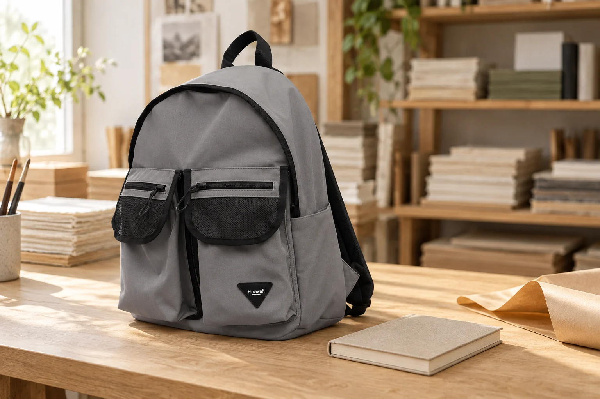

공방 수업 가는 날의 백팩: 완성품이 돌아올 자리까지

토요일 오후, 작은 노트를 직접 만드는 공방 수업을 예약했습니다. 갈 때는 지갑과 휴대전화만 있으면 되지만 돌아올 때는 새로 만든 물건이 하나 늘어납니다. 이런 날의 백팩은 출발 준비보다 귀가 준비를 먼저 해두면 편합니다. 작품을 넣을 빈칸만 남기는 데서 끝내지 않고, 어떤 상태로 받아 어떤 방향으로 옮길지까지 생각해 보세요.
예약 안내에서 완성품의 크기를 찾기
수업 시간과 장소를 확인할 때 완성품의 대략적인 크기, 당일 수령 여부, 포장 제공 여부도 함께 봅니다. 안내에 없다면 공방에 짧게 물어보세요. 제본 노트처럼 납작한 작품과 손잡이가 달린 입체 작품은 필요한 공간이 다릅니다. 같은 ‘원데이 클래스’여도 가방 하나로 가져갈 수 있는지는 달라집니다. 완성품이 아니라 포장까지 마친 바깥 크기를 기준으로 여유를 잡는 것이 좋습니다.
빈칸을 만들기 전에 방향을 정하기
납작한 작품은 표면을 보호한 뒤 세워 옮길 수 있는지, 입체 작품은 바닥을 수평으로 유지해야 하는지 담당자에게 확인합니다. 가방 안에 들어가더라도 기울이면 안 되는 작품이라면 백팩보다 안내받은 별도 운반 방법이 알맞을 수 있습니다. 지퍼가 닫힌다는 사실과 작품이 편안하게 놓인다는 사실은 다릅니다. 위에서 파우치가 누르거나 옆에서 물병이 밀어오는 자리도 피해야 합니다.
작업대에는 필요한 것만 올리기
수업을 시작할 때 백팩은 공방에서 안내한 보관 위치에 둡니다. 작업대에 접착제나 물감이 쓰일 수 있으므로 가방까지 가까이 펼쳐 놓지 않는 편이 편합니다. 휴대전화나 작은 메모처럼 필요한 물건만 꺼내고 입구를 닫아두세요. 도구가 제공되는 수업이라면 개인 도구를 중복해서 챙기기보다 완성품을 가져올 자리를 남길 수 있습니다.
완성 직후에는 ‘넣어도 되는 상태’인지 묻기
표면이 마른 듯 보여도 포장이나 압력이 가능한 시점은 작업 재료에 따라 다릅니다. 말리는 시간, 포장재가 닿아도 되는 면, 이동 중 유지할 방향을 수업을 마치기 전에 확인하세요. 아직 굳지 않은 장식이나 젖은 부분이 있다면 비닐로 감싸 바로 백팩에 넣지 않습니다. 추후 수령이 필요한 작품은 가방에 넣으려 애쓰기보다 안내된 수령 방법으로 정리합니다.
문 앞에서 포장을 다시 하지 않도록
작품을 받은 자리에서 포장과 가방 배치를 마칩니다. 노트를 가져오는 경우라면 포장된 모서리가 지퍼에 걸리지 않는지, 이미 넣은 소지품을 꺼내려고 작품을 매번 빼야 하는지 살펴보세요. 별도 상자를 받았다면 백팩 겉에 매달지 말고 손잡이와 바닥을 확인해 운반합니다. 사진 속 No.1230은 공방 외출의 제품 예시이며, 수납 가능 여부는 본인의 작품과 포장 크기로 판단해야 합니다.
집에서는 작품부터 자리를 마련하기
귀가 후 완성품을 먼저 꺼내 공방의 보관 안내에 맞게 놓습니다. 포장 종이나 작업 중 사용한 물건이 가방 안에 남았는지도 확인하세요. 다음 수업을 위한 메모에는 ‘많이 담겼다’보다 ‘포장 크기’, ‘따로 들었던 것’, ‘쓰지 않은 준비물’을 적어두면 유용합니다. 한 번의 경험이 쌓이면 취미 도구를 늘리지 않고도 나에게 맞는 외출 가방을 준비할 수 있습니다.
참고·안내
- Himawari No.1230 제품 정보
- 실제 Himawari No.1230 제품 사진을 참조한 AI 연출 이미지입니다. 노트와 공방 소품은 판매 구성품이 아니며 실제 수납을 시연한 사진이 아닙니다.
자주 묻는 질문
작품이 가방에 들어가면 바로 넣어도 되나요?
크기 외에도 건조 상태와 포장, 유지해야 할 방향을 공방에 확인하세요. 누르거나 기울이면 안 되는 작품은 별도로 운반할 수 있습니다.
사진 속 노트도 제품 구성인가요?
아닙니다. 노트와 공방 소품은 장면을 위한 연출이며 No.1230의 판매 구성이나 실제 수납량을 나타내지 않습니다.